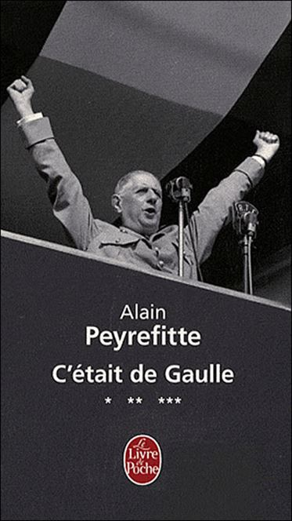
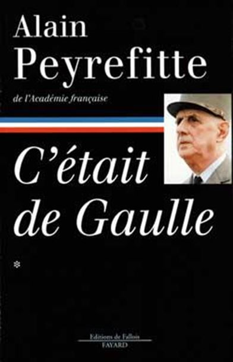
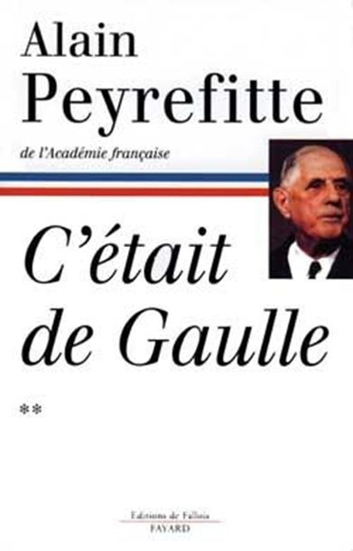

Charles de Gaulle est né en 1890 à Lille, il est mort en 1970 à Colombey-les-Deux-Eglises. Son nom est aussi connu en Occident qu’en Orient, au Nord qu’au Sud. Il marqua l’histoire du vingtième siècle de son empreinte de géant. Les écrits qui lui sont consacrés sont légions. Lorsque Lacouture écrivit la monumentale biographie du Général, pas moins de 800 ouvrages ou articles sur de Gaulle existaient déjà ! Si 80 000 livres et articles (environ) ont été écrits sur Napoléon, combien le seront sur de Gaulle dans deux siècles ?
Militaire, Chef d’État, écrivain, théoricien tactique, le personnage porte plusieurs képis. N’étant pas historien ni docteur en degaullogie, je m’aventurerai quand même dans ce numéro et dans ceux à venir à parler de cette figure historique, tout en étant conscient que ma vision peut être faussée par mon ignorance, mon propre ressenti ou ma propre admiration pour le personnage.
J’ai vécu sous le gaullisme lorsque j’étais adolescent, j’ai connu sa politique je l’ai tantôt approuvée, tantôt rejetée, comme peuvent le faire les adolescents qui se croient « politisés ». Je ne prétends donc pas à l’objectivité, je commente simplement les écrits de deux auteurs qui ont effectué sur de Gaulle une œuvre colossale. Je fais ce travail volontiers pour « Sans Frontières » car le visage, la photo et des propos sur le général, reviennent souvent dans le journal. De Gaulle est vu, dans les ex-pays du bloc soviétique et en Russie même, comme un héros libérateur, un fin politique et un homme courageux. Il est celui qui a dit « non » aux américains et qui se rapprocha des pays communistes par sa politique du non-alignement, par la coopération technique avec l’URSS. Il fut le premier chef d’état à reconnaître la Chine communiste.
Je m’appuierai pour ce travail sur deux monuments qui lui sont dédiés, le premier sera la trilogie qu’Alain Peyrefitte lui a consacrée entre 1994 et 2000 et qui s’intitule « C’était de Gaulle ». Alain Peyrefitte fut plusieurs fois ministre du Général (Secrétaire d’État à l’Information, puis Ministre de l’Information, Ministre de la Recherche et Ministre de l’Education Nationale.) Il fut également écrivain, membre de l’Académie Française. Il continua une carrière politique après la disparition du Général de Gaulle.
Le second monument sur lequel je m’appuierai sera la biographie en trois volumes que fit paraître Jean Lacouture entre 1984 et 1986 et qui a pour titre « De Gaulle ». Jean Lacouture était journaliste, écrivain et historien. Il était très engagé à gauche et écrivit de nombreuses biographies.
À quelques exceptions près je n’ai pas fait un fondu de ces ouvrages. J’ai préféré, pour des raisons de clarté, respecter la chronologie de mes lectures et de mes notes telles que je les avais faites, en 2015 pour Peyrefitte et en 2016 pour Lacouture. J’ai parfois fait quelques ajouts à ces notes. Je ne me suis pas contenté de ces deux sources d’informations pour ce travail, j’utilise aussi d’autres ouvrages lus antérieurement et qui ne sont pas toujours très hagiographiques envers le général. Mon premier contact juvénile et littéraire avec de Gaulle ne fut pas du tout hagiographique, mais carrément antigaulliste. Ce n’est qu’assez tardivement que je me suis intéressé à l’homme en laissant de côté mes ressentiments de jeunesse. Si j’introduis quelques petites interférences piochées ailleurs, ce sont principalement les livres de Peyrefitte et Lacouture que je commenterai dans les pages à venir.
C’était de Gaulle
Tome I
Avec C’était de Gaulle, édition Fayard (poche), Alain Peyrefitte nous fait vivre en duplex les conseils des ministres et les entretiens personnels qu’il eut avec ce géant politique français, dont la statue, gravée dans l’image de la nation, restera à tout jamais indéboulonnable. Le tome I dépasse les 800 pages et couvre la période 1959/1963. Le portrait du général est parfois brut de décoffrage, mais l’auteur, véritable scribe qui notait aussitôt les propos entendus ou échangés, s’est voulu plus un reporter à chaud qu’un biographe appliqué. Ce qui a été privilégié ce sont les paroles, les propos et les analyses de celui qui redonna à la France sa grandeur.
Prétentieux, hautain et méprisant c’est l’image que l’on peut garder du Général et que Peyrefitte n’essaie pas de gommer. Génie politique, ardant patriote et mégalomane au point de confondre la France et sa personne, l’auteur ne tente pas de l’effacer non plus. Il n’a pas besoin de mettre en valeur les propos du général : ils parlent d’eux-mêmes !
Pourtant ce politique rodé qu’était de Gaulle s’est parfois lourdement trompé, notamment sur l’Algérie. Non pas sur l’indépendance qu’il jugeait nécessaire, la célèbre tirade :
« Mon village ne s’appellerait plus Colombey-les-Deux-Églises mais Colombey-les-Deux-Mosquées » indique clairement son idée sur le sujet. Dans ce même entretien, de Gaulle confia également à Peyrefitte :
« Nous sommes quand même avant tout un peuple européen de race blanche, de culture grecque et latine et de religion chrétienne.»
Ces propos ont été repris récemment par une femme politique française et provoquèrent un tollé médiatique. Cette personnalité politique, plusieurs fois ministre, est membre du parti politique qui se réclame de l’héritage gaulliste depuis fort longtemps (Les Républicains).
Pour la citation du général que fit cette femme (Nadine Morano) le Parti Les Républicains lui retira l’investiture électorale pour les élections régionales de 2015 !
Dans l’affaire algérienne, de Gaulle se trompa surtout quand au nombre de rapatriés, en prévoyant 350 000 arrivées grand maximum, alors qu’ils ne furent pas loin du million. Comme l’Algérie n’avait pas rejoint la France Libre en 40, il lui en a toujours gardé rancœur. Certains historiens voient dans cette erreur d’appréciation une intention malveillante. De Gaulle n’aimait pas les pieds-noirs, il n’en fit jamais secret. Vu le génie visionnaire et prophétique du personnage on a effectivement du mal à comprendre une erreur aussi grande et un optimisme aussi insouciant.
Car visionnaire, il l’était. Le 26 janvier 1963, il y a plus de cinquante ans, il déclarait à Peyrefitte :
« Mais quelle Europe ? Il faut qu’elle soit véritablement européenne. Si elle n’est pas l’Europe des peuples, si elle est confiée à quelques organismes technocratiques plus ou moins intégrés, elle sera une histoire pour professionnels, limitée et sans avenir. Et ce sont les américains qui en profiteront pour imposer leur hégémonie. » (p.488)
Rebelle ? Il le fut en quarante, c’est l’image que donne l’hagiographie officielle. Ennemi de la bourgeoisie ? On pourrait le croire :
« La Révolution française n’a pas appelé au pouvoir le peuple français, mais cette classe artificielle qu’est la bourgeoisie. Cette classe qui s’est de plus en plus abâtardie, jusqu’à en devenir traîtresse à son propre pays [ ... ] En réalité il y a deux bourgeoisies. La bourgeoisie d’argent, celle qui lit Le Figaro, et la bourgeoisie intellectuelle qui lit Le Monde. Les deux font la paire. Elles s’entendent pour se partager le pouvoir.» (p.516)
Visionnaire et prophète, il n’y a pas d’autres termes pour désigner pareil politique qui voit aussi loin et aussi clair :
« C’est la même chose partout. Les Américains se sont infiltrés dans tous les organes de propagande et dans les partis. Ils ont noyauté les structures politiques. Seul le peuple a encore des réflexes. » (p.517)
Et il y en a comme ça presque 800 pages, dans lesquelles j’aurais dû me plonger beaucoup plus tôt ! On a parfois l’impression, non pas de lire des phrases qui ont été prononcées il y a un demi siècle, mais des diatribes qui circulent dans certains journaux actuels et qui sont rejetées par le consumérisme bienpensant de la classe politique, les « politichiens » comme de Gaulle les appelait.
Nul doute que le général, avec le vocabulaire parfois gaulois qui était le sien, le franc parler qui le caractérisait et son humour pince sans rire, essuierait aujourd’hui plus d’un procès en diffamation par les associations antitout, dont les leaders sont en grande partie formés par les USA ! Patriote, nationaliste et catholique il serait aujourd’hui classé à l’extrême droite sur l’échiquier politique.
De Gaulle ce fut, entre autres, la bombe nucléaire française, la sortie de l’OTAN, le refus de l’Angleterre dans le Marché Commun. Que l’on soit post-gaulliste convaincu ou pas, force est de reconnaître qu’il a été le maître d’œuvre de la reconstruction française et de la grandeur de ce pays. On sait, rien qu’à la lecture du premier tome, qu’aujourd’hui il n’y a plus de gaullistes... depuis pas mal de temps d’ailleurs ou alors ils ne sont pas là où on le croit.
Tome II
Le deuxième volet de « C’était de Gaulle » couvre la période du début de 1963 au début de 1966. Il occupe presque 900 pages (en poche.) C’était bien utile pour une période aussi cruciale, allant de la fabrication de la bombe atomique française aux élections présidentielles qui vont marquer le deuxième septennat du général.
Grandiose, édifiant, époustouflant, les qualificatifs sont tous superflus ! De Gaulle, non seulement sait gouverner, mais il sait également manœuvrer, que ce soit ses propres ministres ou d’autres chefs d’état ! Tour à tour prophétisant l’avenir, visionnaire politique, logicien, analyste et homme de grande culture. On suit, grâce à Alain Peyrefitte, le Chef de l’État en Province et à l’étranger, au Conseil des ministres ou au Salon Doré où il se livre parfois à des confidences.
L’indépendance nucléaire par lui voulue, permettra à l’État-nation de se libérer de l’emprise américaine, car :
« Aujourd’hui, sans l’Algérie, la France se retrouve le modèle des états-nations. Les États-Unis sont une puissance, la plus grande, mais ils ne sont pas une vraie nation. » (p.60)
De Gaulle était-il freudien ? Je ne le pense pas, mais ses réparties en privé ne manquent pas de l’humour acide et cynique, digne du célèbre Viennois :
« A.P. : -Le nouveau statut doit couper le cordon ombilical entre le gouvernement et la Radio-Télévision CdG : - Couper le cordon, ça n’a jamais empêché les mères abusives ! » (p.242)
Si son humour pouvait être pince-sans-rire, de Gaulle, qui ne venait pas du peuple, avait le bons sens populaire collé à la peau :
« Je ne suis pas sûr que l’Église ait eu raison de supprimer les processions, les manifestations extérieures du culte, les chants en latin. On a toujours tort de donner l’apparence de se renier, d’avoir honte de soi-même. Comment voulez-vous que les autres croient en vous, si vous n’y croyiez pas vous-même ? » (p.274)
Toujours dans le domaine religieux, à propos des obsèques de Jean XXIII, il a ce mot savoureux :
« A.P. : – Savez-vous déjà comment sera composée notre délégation pour les funérailles ?
CdG. : - Ne le dites pas encore, il faut d’abord prévenir le Vatican. Couve1 naturellement. Il est protestant, tant mieux. Puisque Jean XXIII a voulu jouer de l’œcuménisme on lui en donnera. (Rire.) » (p.273)
Et ça fuse ainsi toutes les deux ou trois pages, tantôt visionnaire, tantôt prophétique, quel que soit le sujet abordé avec son ministre de l’information, souvent franc et brutal, parfois cynique ou désabusé, rarement colérique.
Le Général et Georges Pompidou
Pompidou ayant été le Chef du Gouvernement de de Gaulle on en apprend également un petit peu sur lui aussi. C’est ainsi que l’on découvre (page 770) que ce Premier Ministre n’a jamais utilisé le 49-3, ça change tout de même de ce que l’on a aujourd’hui... Curieusement on apprend dans une note de bas de page (p.183) que : Le Général parle en anciens francs !
Il ne parlait jamais non plus des « soviétiques », il disait « les Russes. »
C’est sur la campagne électorale de 1965 qui l’opposa à Mitterrand au second tour, que se termine le Tome II. On savait déjà à la lecture du Tome I que de Gaulle refusa de diffuser la photo de Mitterrand serrant la main du Maréchal Pétain le jour où ce dernier lui attribua la Francisque. Grandeur et magnanimité du personnage ; le deuxième tour des élections n’était pas joué d’avance ! Le général l’emporta avec plus de 55 % des suffrages. Quel aurait été le chiffre avec la photo diffusée ?
Ici, Peyrefitte nous livre la rencontre de Gaulle-Mitterrand durant l’hiver 43/44, raconté par de Gaulle lui-même. Mitterrand avait « hâte » de rentrer en France, de Gaulle lui proposa d’aller se battre dans divers corps expéditionnaires, Mitterrand refusa, de Gaulle le congédia en lui disant « Nous n’avons plus rien à nous dire. » (p.789)
Leçon d’histoire, témoignage du XXème siècle, ce livre est aussi plus que cela : il est une passion française qui pourrait convertir le lecteur au Gaullisme, si cela avait un sens en notre époque...
J’aborderai dans le prochain numéro de « Sans Frontières » le troisième et dernier volume de « C’était de Gaulle » d’Alain Peyrefitte, ainsi que le volume I de la biographie de Jean Lacouture.
M.M.
1Maurice Couve de Murville, Ministre des Affaires Étrangères
Partager cette page